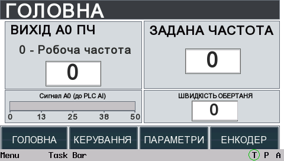

ГОЛОВНА
Швидко відповідає на три питання: який сигнал зараз контролюється, яку частоту задано приводу та з якою швидкістю реально обертається вал.
Інструкція допомагає швидко зрозуміти призначення кожного елемента HMI, порядок роботи з екранами та значення основних показів стенду.
Робочі елементи екрана виділені рамками. Натисніть потрібний елемент, щоб переглянути його призначення та рекомендації з використання. Для переходу між екранами використовуйте верхні вкладки або нижні кнопки HMI.

Швидко відповідає на три питання: який сигнал зараз контролюється, яку частоту задано приводу та з якою швидкістю реально обертається вал.
Зібрані команди, які студент використовує під час лабораторної роботи: силова частина, функціональні входи ПЧ та аналогове завдання.
Містить вихідні дані, без яких неможливо правильно трактувати покази стенду, а також вибір параметра, який повертається з ПЧ на головний екран.
Потрібен для незалежної перевірки механічної швидкості та швидкої діагностики, чи бачить система імпульси датчика.
Чому на «ГОЛОВНА» змінюються bar, підпис і число.
ПЧ може передавати на HMI різні параметри, але в один момент — лише один вибраний сигнал. Тому на сторінці «ПАРАМЕТРИ» задається його зміст, а на «ГОЛОВНА» автоматично підміняються назва параметра, bar, шкала та цифрове поле.
На сторінці «ПАРАМЕТРИ» виберіть потрібний режим P06.14. Після переходу на «ГОЛОВНА» назва параметра, bar, шкала та числове значення автоматично відповідатимуть вибраному режиму.
Основний показник — поточна швидкість обертання. Фази A/B потрібні для швидкої перевірки сигналів, «РУХ/СТОП» одразу показує наявність імпульсів, а службові лічильники допомагають зрозуміти, чи коректно система рахує оберти. PPR і множник задають параметри встановленого енкодера, а «Імп./об» показує підсумкову кількість відліків за один оберт.